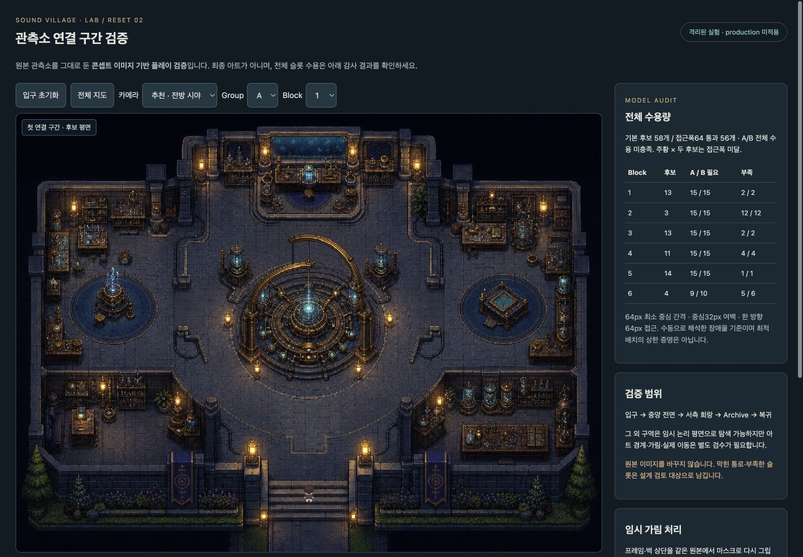
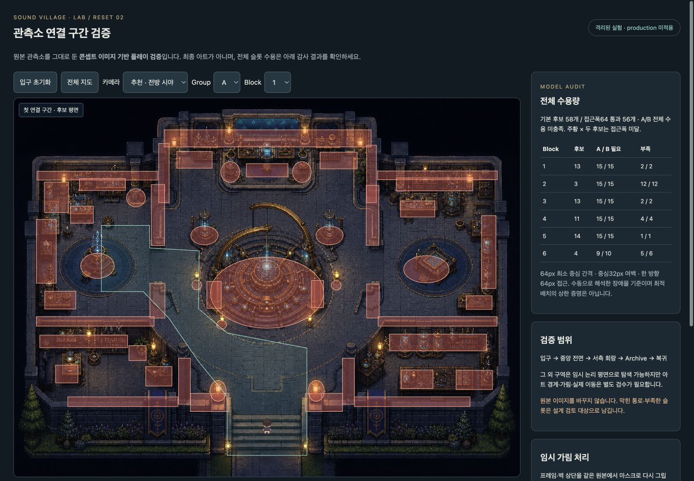
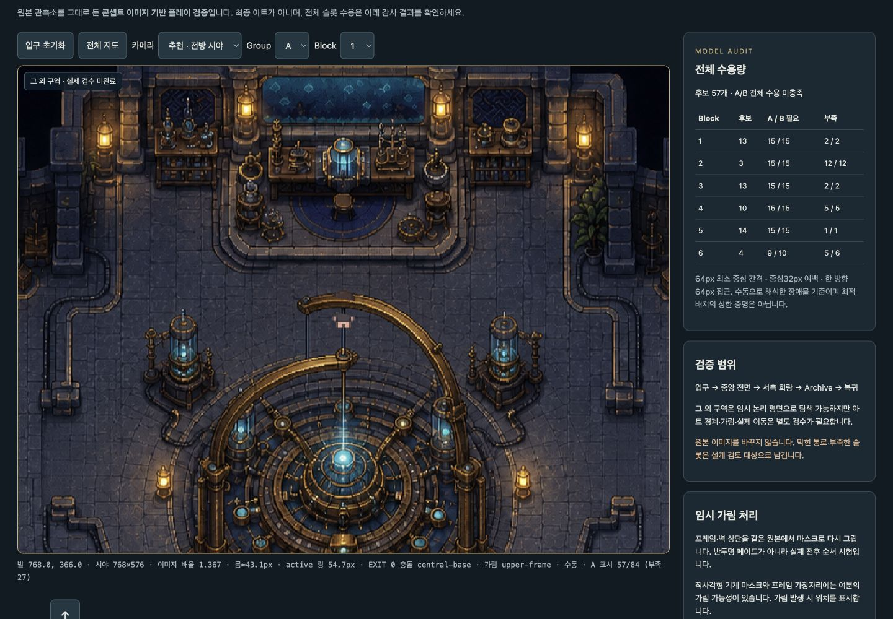
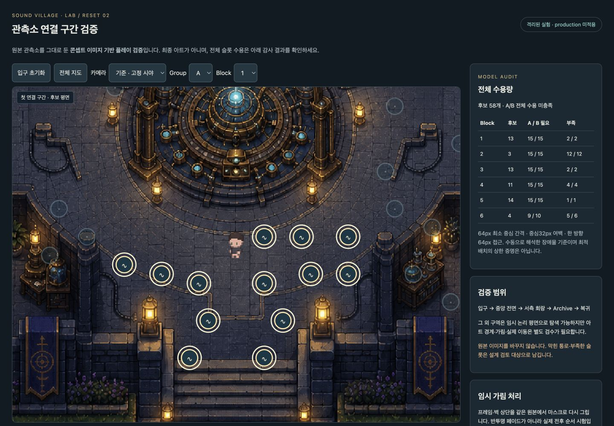
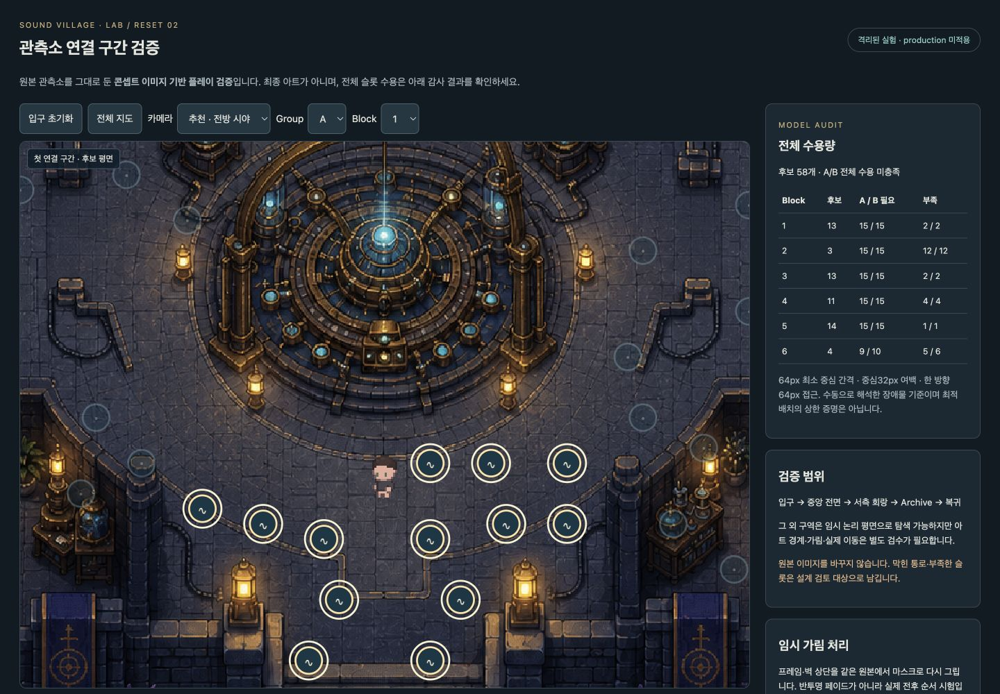
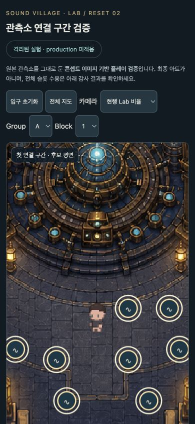
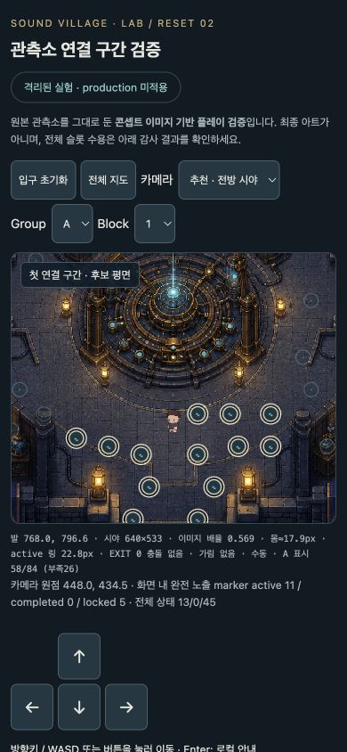
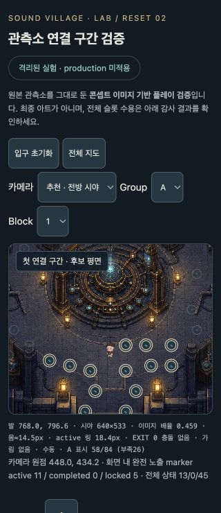
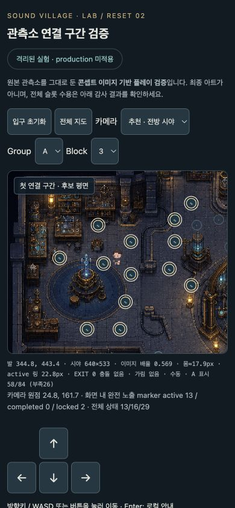
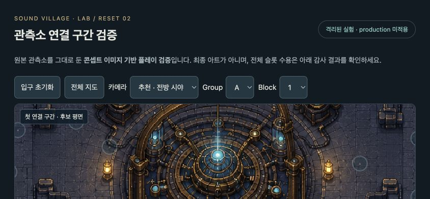

컨셉은 그대로, 플레이 조건은 검증 중
콘셉트 이미지 기반의 격리 플레이 검증이며, 최종 runtime 에셋이나 production 구현이 아니다.
기본 후보58개, 접근폭64 추가 검사 통과56개. 엄격 기준 A28개 / B29개 부족. 지원 공간과 주변 배치를 다시 검토해야 한다. 원본 이미지·production 수정 없음.
01 · 원본 공간의 보존

02 · 접지와 가림을 분리


03 · 브라우저에서 확인한 범위
입구 → 중앙 전면 → 서측 회랑 → Archive → 복귀를 실제 RAF·collision 기반 개발용 경로 재생으로 완료했다. 단일 키보드/방향 버튼, 벽·책상·중앙 받침 collision, 로컬 출구/marker 안내도 확인했다. 전체 경로를 사람이 직접 주행한 검수와 실제 휴대폰 long press는 남아 있다.




최종 경로·loop 로그 · 조작·카메라 관찰 기록 · 8개 논리 테스트
04 · 카메라 비교














추천 후보는 desktop24×18tile+최대100world 전방offset, mobile640world/6:5 지도 영역. 320식별성과 가로UI는 미해결이며 최종 카메라 승인이 아니다. 화면 크기는 실제 휴대폰이 아닌 브라우저 viewport로 검사했다.
05 · 전체 수용량
| Block | 후보 | A 필요 / 부족 | B 필요 / 부족 |
|---|---|---|---|
| 1 | 13 | 15 / 2 | 15 / 2 |
| 2 | 3 | 15 / 12 | 15 / 12 |
| 3 | 13 | 15 / 2 | 15 / 2 |
| 4 | 11 | 15 / 4 | 15 / 4 |
| 5 | 14 | 15 / 1 | 15 / 1 |
| 6 | 4 | 9 / 5 | 10 / 6 |
중심32world 여백, 후보 간64world, 64world 길이 접근 시player 통과, 전경 제외, 주 통로 예약을 적용했다. 추가 폭64world swept 접근 검사에서는56개만 통과했다(B1~6:13/2/13/11/13/4). B2·B5 각1개는 미달이며 preview의 주황 ×로 표시한다. 모든 후보의 실제 접근·최종 아트 검수는 남아 있다.
A/B×6block 실제 UI 전환 · 432개 카메라·위치·상태 정적 밀도
06 · 다음 수정은 주변부터
- 남서·남동 지원 공간의 측면 개구부와 실제 통행폭을 정밀 검토한다.
- 같은 block 내 회랑/지원 공간 재배분을 먼저 비교한다. 현재 휴리스틱67개 전역packing도 전체 수용을 해결하지 못했다.
- 남서 책상/기기대, 남동 긴 작업대와 divider 끝 개구부만 최소 조정 시안을 만든다. 중앙 프레임 크기와 연구실 밀도는 유지한다.
이 수정으로 부족분이 모두 해결된다고 아직 단정하지 않는다. 구조 시안 승인 → 동일 조건 재감사 → 시험 구간 clean plate·정확한 alpha 분리 순서가 필요하다.
07 · 보존과 승인 대기
기존9,945개 파일 해시 검사: 수정0 / 삭제0. 새 폴더와 보고서만 생성. Music·production·metadata·DB·Git 쓰기 없음. 최종 에셋 제작과 production 적용은 시작하지 않는다.